直線を描く
ツールバーで直線ツールを選択し、アートボード上でマウスをドラッグすると、ドラッグの距離と角度に応じた直線が描かれます。
ツールバーに直線ツールが表示されていない場合は、長方形ツール（または楕円，多角形，スターツールのいずれか）を長押しすると、直線ツールに切り替えができます。
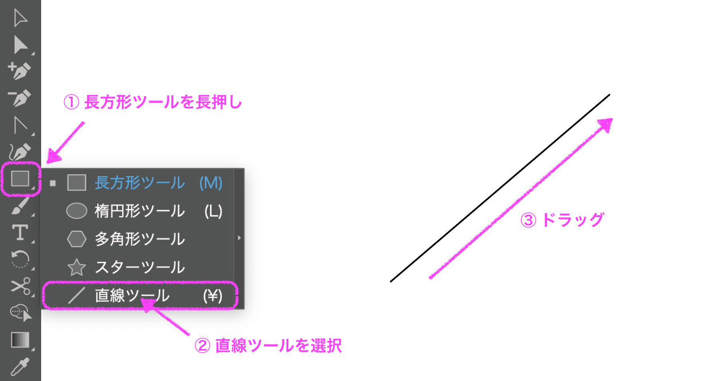線の書式
線の書式を変更したい場合は、選択ツールで線を選択し、プロパティパネルから書式の設定をします。
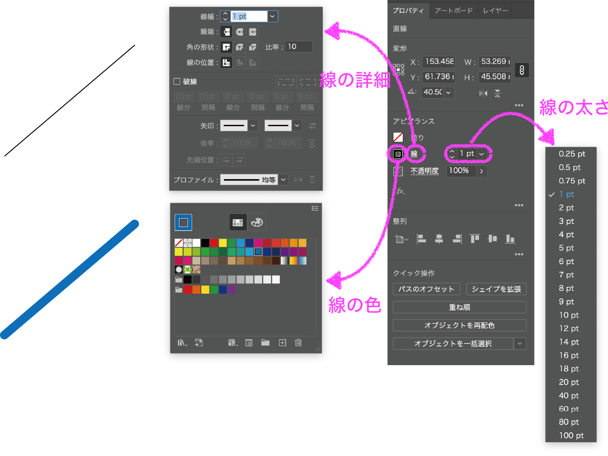ツールバーで直線ツールを選択し、アートボード上でマウスをドラッグすると、ドラッグの距離と角度に応じた直線が描かれます。
ツールバーに直線ツールが表示されていない場合は、長方形ツール（または楕円，多角形，スターツールのいずれか）を長押しすると、直線ツールに切り替えができます。
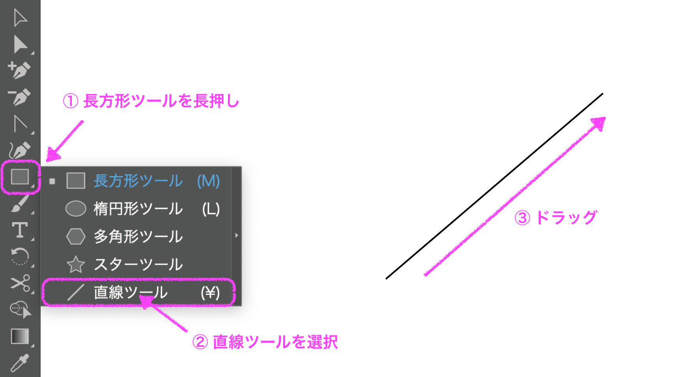線の書式を変更したい場合は、選択ツールで線を選択し、プロパティパネルから書式の設定をします。
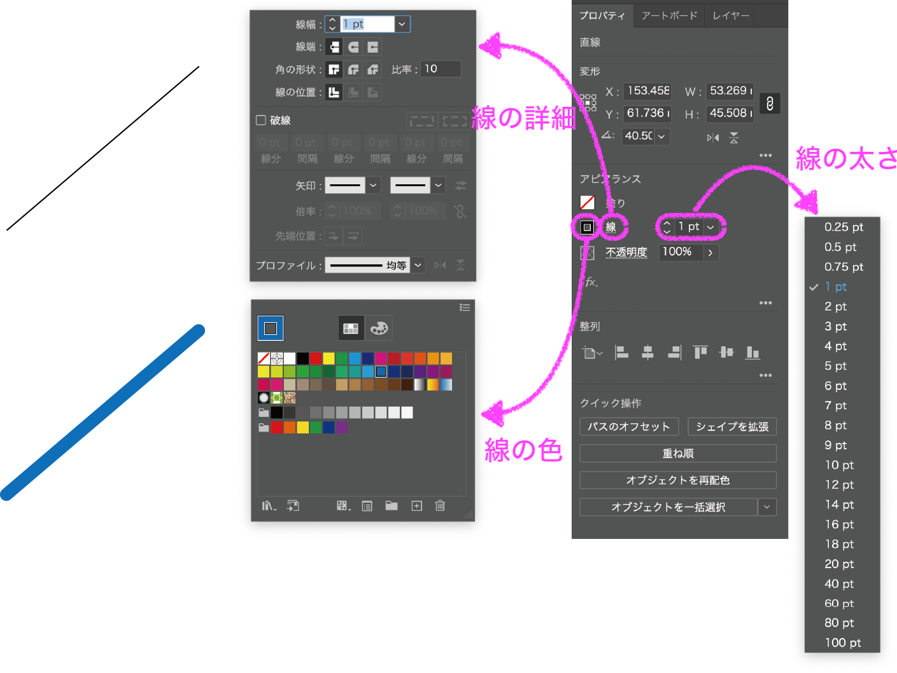直線にアンカーポイントを追加すると、直線を折り曲げることができます。
アンカーポイントには、直線間のアンカーポイントと曲線のアンカーポイントがあり、曲線のアンカーポイントはスムーズポイントとコーナーポイントの２種類があります。
スムーズポイントはポイントから左右の方向線（ハンドル）がまっすぐ伸びていて、方向線（ハンドル）はポイントを軸に動きます。
一方、コーナーポイントは左右で独立した方向線（ハンドル）を動かすことができます。末端にあるコーナーポイントからは片方の方向線（ハンドル）のみ出現します。
アンカーポイントの追加ツールを使って、直線上の任意の位置をクリックすると、アンカーポイントを追加することができます。ダイレクト選択ツールを使って、追加したアンカーポイントからドラッグすると、追加したアンカーポイントを頂点とした折れ線を描くことができます。
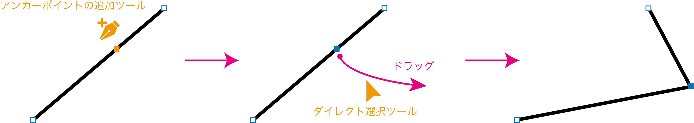アンカーポイントツールを使って、追加したアンカーポイントからドラッグすると、方向線（ハンドル）が出現して曲線を描くことができます。このときの追加したアンカーポイントはスムーズポイントといい、曲線の形を決めることができます。
続いて、ダイレクト選択ツールを使って、スムーズポイントの方向線からドラッグすると、曲線の形を変えることができます。
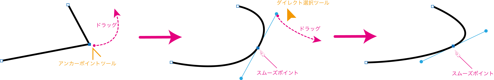一方、アンカーポイントツールを使って、方向線（ハンドル）の片方からドラッグすると、コーナーポイントを頂点とした線を描くことができます。
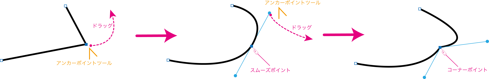アンカーポイントツールを使って、線の末端のアンカーポイントからドラッグすると、末端のアンカーポイントがスムーズポイントになります。
さらに、アンカーポイントツールを使って、新しいスムーズポイントの方向線からドラッグすると、末端のアンカーポイントがコーナーポイントになります。
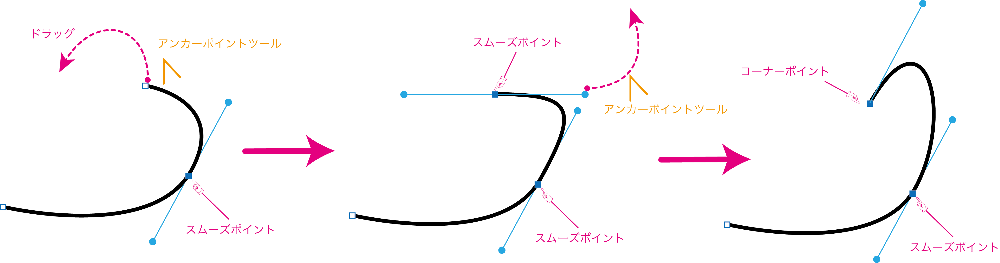線の連結をすると、線の末端どうしを結ぶ直線が追加され、領域をもった図形となります。
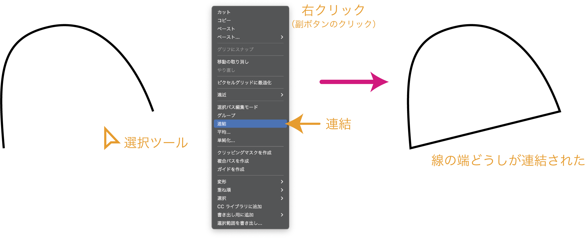作りたい線の概形をつくり、線の太さを6ptとします。
見やすいように緑色の背景にしています。

線をコピーします。
コピーした方の線の書式を変更します。線の太さを5ptにし、破線にチェックを入れ、線の色を白色にします。
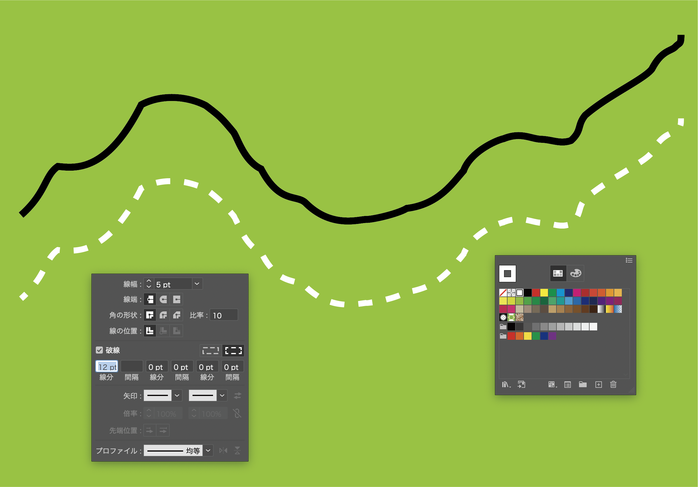黒の実線と白の破線を重ねると、JRの線路を表す線となります。
必要に応じて駅を追加します。
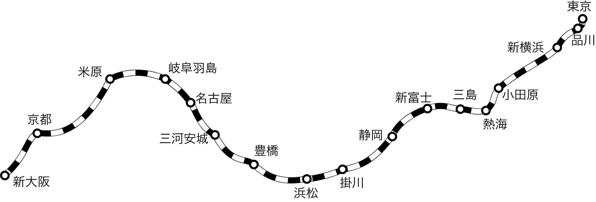